8. ポテンショスタット拡張基板の製作
(2024.10.22) インピーダンス測定に対応させるための Ch1-Ch2 入れ替えアダプタについて追記しました．
(2024.10.22) 自然電位測定用エレクトロメータモード対応のための改造法を追記しました．
(2021.2.25) 製作部の実体図 Fig. 8.5 および Fig. 8.10 の間違いのご指摘をいただき，図を修正しました．
ここまで，ポテンショスタットの制御および記録を PC 化するために Analog Discovery を利用する方法について，紹介してきた．これは，すでにアナログポテンショスタットを持っていることが前提である．しかし，ポテンショスタットは，計測器としては安価な部類に入るとはいえ，それでも一定の性能を持ったものは10万円を超える価格のものがほとんどであり，制御系や記録系の機器のことも考えると，電気化学計測を試しに始めてみたい，あるいは学生実験や実習等で何台かをまとめて導入・使用したいという場合には，なかなか手を出しにくいのも現実である．
ポテンショスタットの市販品がそれなりの価格になるのは，それに見合うさまざまな回路設計・実装上の最適化，保護回路等の付属回路，較正処理等が加えられているからである．しかし，性能を欲張らなければ，電子回路としての基本部分は比較的簡単な回路で構成できる．
本節では，仕様を大幅に限定した上で，基本の電気化学測定を行うことに限定したポテンショスタットの製作例を紹介する．ポテンショスタットはあくまでも電位印加の制御とそのときの電流の計測を行うための装置であり，制御系，記録系が別途必要になる．そこで，ここで紹介するポテンショスタットは，Analog Discovery と組み合わせて使うことを大前提とし，Analog Discovery の拡張基板の形で製作した (Fig. 8.1)．ポテンショスタットの自作例は，いくつかの学会誌や web サイトにも見られるし，市販の自作キットもあるが，Analog Discovery と組み合わせた形の製作としたことで，ほぼ完全な計測セットを (比較的安価に) 構成できるところが本項のポイントである．
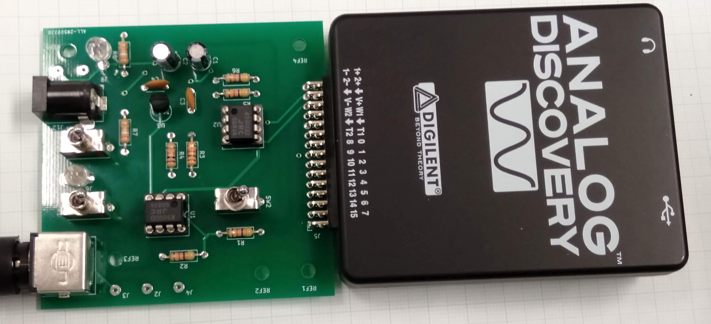
Fig. 8.1 製作したポテンショスタット拡張基板 (Analog Discovery に装着したところ)
筆者はこれを主に学部学生の実習に使用することを想定して設計した．そのため，1台当たりの製作コストを抑えること (2020年時点の実勢価格で 3,000円程度)，何台も製作することを想定した製作作業自体の容易さも重視して，仕様策定と設計を行った．部品点数も可能な限り減らすようにしてあり，電子工作にあまり慣れていなくても，比較的容易に製作できるように配慮したつもりである．部品を用意して，学生実験の一環としてポテンショスタットの製作から始めさせることもできるかもしれない．
現在，筆者の所属する物質科学コース 3年生の学生実験ではこのポテンショスタット (+ Analog Discovery のシステム) を使用しており，基本電気化学計測の体験や，電解重合膜の調製に使用している．
なお，本機は接続端子を Analog Discovery 用にしてある以外は，基本的なアナログポテンショスタットそのものなので，他のファンクションジェネレータや記録系 (ペンレコーダや AD 変換器) に接続することもできる．その方法については別記する．
Fig. 8.2 (下図) および Fig. 8.3 (右図) は，本システムを用いた学生実験の様子である．
|
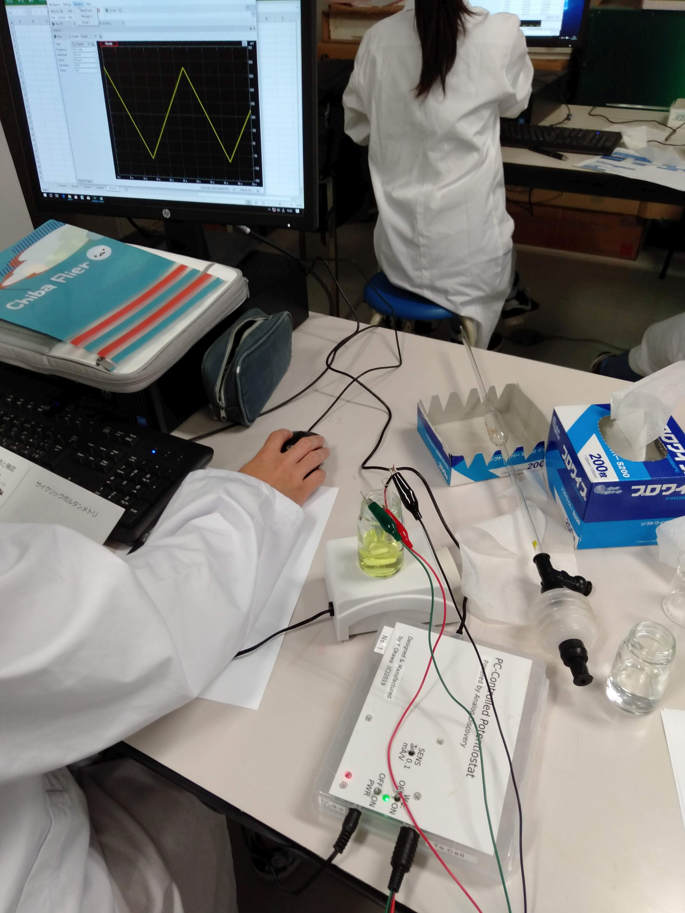
|
|
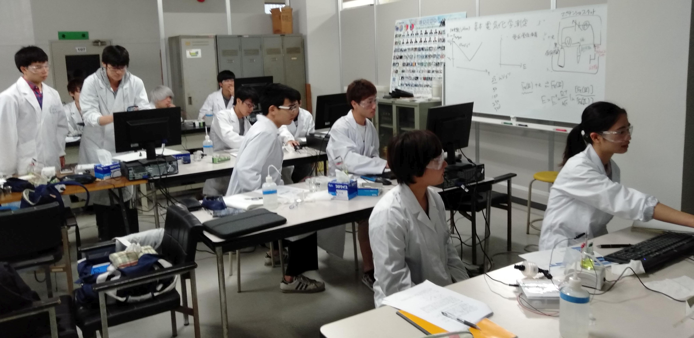
|
|
Fig. 8.2 学生実験での使用例 (1)
|
Fig. 8.3 学生実験での使用例 (2)
|
本機は学生実験用に設計したものではあるが，実用的にも一定の性能をもっている．また，電気化学インピーダンス測定 や 微分容量測定 にも対応できる基本性能をもっている．インピーダンス系の測定に対応できるポテンショスタットを保有していない場合にも使える場合があるだろう．ただし，この目的のためには，一部，改造の必要な部分がある．この点については 後述 する．
また，小型で電池駆動もできるので，ノート PC と組み合わせて講義室等での演示実験やオンサイト実験にも利用できる．WaveForms の画面をプロジェクタで大きく映しながら，実際に測定を行っている様子を見せることが可能である．ポータブル用の電源については 後述 する．
仕様
このポテンショスタットは製作の容易さとコストダウンを優先して，仕様をかなり制限している．主な仕様を以下にまとめる．とにかく，安価な部品を所定位置にハンダ付けすれば，とりあえず測定に使用できるものが完成するということを重視した (学生実験に使う想定のため，何台も作る必要があるので重要)．
コストについては (入手経路にもよるが) Analog Discovery だけで約 3万円 (Analog Discovery 2 ならそれ以上) するため，基板のコストはかなり切り詰めた設計をしている．その結果，(複数台製作することを前提に PCB を作成すれば) 1台あたり 3,000円以下で製作可能となっている．
- ポテンショスタット機能のみ
- ほとんどの市販機はガルバノスタットモードや自然電位を測るエレクトロメータモードを持っていて切り替えて使えるようになっているが，本機はそれらの機能を省略した．
- エレクトロメータモードは用意した方がよかったかもしれない．→ 基板改造で対応できることを確認しました (回路の修正そのものはわずかですが，多少の工作技術が必要です)．
- ガルバノスタットも同様の拡張基板の形で別に作ることもできるが，当面，製作予定はない (ニーズがあれば考えますので，興味を持たれた方はご連絡ください．ただしポテンショスタット基板と合体させた一体型にすると基板がかなり大掛かりになるため，現時点では両用に対応する事は考えていません)．
- 最大電流 30 mA 程度
- 最大出力電圧は ±3 V 程度 (実際には4 V強までは可能)．
- 過電流保護等の回路は設けない．もし IC が焼損したりした場合は，挿し換える (そのくらいに安価な部品を採用する)．
- 電解重合膜を作る実験に必要な電流を，バッファレスで出力できるギリギリの仕様．
- 電流感度は2段階の切り替え
- たとえば 1 mA/V と 10 mA/V など．組み立て時に選択可能．
- 現実的には，0.1 mA/V，1 mA/V，10 mA/V から二つを選択して組み立てることになるだろう．
- 市販品や多くの自作例では多接点のロータリースイッチを用いて感度レベルを多段階に変えられるようにしているが，実際の測定では使われるレンジは限定されることが多く，2段階程度の切り替えで対応できることが多い．回路を複雑にしない，簡単に製作できる，という点から，ここは2段階の切り替えと割切った．
- 当コースの学生実験用としては，CV と PSCA 用に 1 mA/V レンジ，電解重合膜調製用に 10 mA/V レンジの2段階としている．
→ ややトリッキーな形になるが，中立offのトグルスイッチを用いることで 10，1，0.1 mA/V の3段階切り替えにすることも可能 (別記)．
- 電池駆動可能
- 講義室等への持ち込みや，オンサイト分析への利用が容易．
- 1枚のプリント基板に全部品を実装
- 安全面や使いやすさの面でケースに組み込んで使用するべきだが，組み立てたままの基板の状態でも Analog Discovery に装着するだけで使用できる．
- スイッチ等を基板に直付けせず，パネルに取り付けて短い被覆線で接続することもできる．ただし，この場合は全体をシールドできる金属ケースに組み込むことを強く推奨する．
- 無調整で動く
- 電流，電位の絶対精度は妥協する → 学生実験レベルで十分な精度は確保
- 抵抗の誤差や OP アンプのオフセット誤差は無視 → 必要であれば，制御データや記録データを計算処理で補正
回路
基本回路は一般的な教科書のものをそのまま使用した．具体的には，A. J. Bard, L. R. Faulkner, "Electrochemical Methods" (Wiley, 1980) に掲載されている回路 (Fig. 13.4.5) から，電位制御入力端子を1回路のみに減らし，ある程度の電流出力を取れる OP アンプを採用することで，電流ブースタも省略した．
試作した回路図を Fig. 8.4 (下図) に示す．
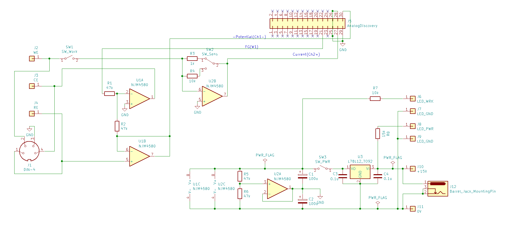
Fig. 8.4 試作全回路図 (クリックで拡大)．
使用した部品について
- OP アンプ IC
- 20 mA 以上の出力が取れる安価な汎用品種の中から，NJM4580DD (JRC) (DIP タイプ) を使用した．
- ICソケット (一例) を利用して取り付ける．
- この IC はひとつ数十円と安価であるので，多少のストックを持っておくことで，過電流等で破損した場合はそのまま挿し換えて対応する (そのためにソケットを使う) こととし，過電流保護等の回路は設けない．
- 4580はバイポーラ入力タイプであり，微小電流の測定はできない．0.1 mA/V より高感度が必要な場合は，FET 入力タイプへの変更が必要になるが，最大出力電流は数 mA 程度で使用する必要がある．後述．
- AC アダプタとDCジャック
- 回路図中にはないが，電源は 15 V 程度の汎用 ACアダプタ (一例) から供給する．
- 三端子レギュレータ (78L12) による簡単な安定化回路を基板上に設けたので，DC 15 V ～ 24 V で 0.1 A 以上の出力の ACアダプタであれば，ほぼ何でも使えるだろう．出力端子の極性だけはセンタープラスであることを確認する必要がある．
- 基板用ジャックの例．
- ジャックを用いずに +15 V (J10) と 0 V (J11) というランドに直接給電してもよい．
- 三端子レギュレータ 78L12
- 三端子レギュレータは 12 V 0.1 A タイプのものを用いた．全電流が大きくなりすぎたときの保護回路を兼ねている．
- ポテンショスタットの基本回路で OP アンプが3回路必要であり，4580 は1パッケージに2回路入っているので，二つ使うと1回路分余る．これを電源のスプリッタとして使用した．回路全体は ±6 V で動作する．
- 抵抗
- 1/4 W 型の汎用カーボン抵抗 (5% 級) を使用した．現在流通しているものは，公称誤差 5% 級のものでも 2% 程度以内のものがほとんどであり，そのまま使用しても (ほぼ) 問題にならない．
- 1% 級の金属皮膜タイプを用いるとより安心である．
- R3，R4の値が電流感度を決める．0.1 mA/V であれば 10 kΩ，1 mA/V であれば 1 kΩ，10 mA/V であれば 100 Ωを用いる．この抵抗を大きくすれば原理的には感度は上がるのだが，μAレベルの電流を測ることは想定していない (ここで使用しているOPアンプの制約)．また電流も 30 mA 程度を上限に使うべきなので，この3種から二つを選ぶのが現実的である．ここに高精度品を使う (あるいは選別する) と，電流感度の精度が向上する (計測結果を計算で補正することもできる)．
- R1，R2，R5，R6 はいずれも 47 kΩであるが，R1 と R2，R5 と R6 の値が近いもので組み合わせて使用すると，オフセット誤差を小さくできる (OP アンプ自体の誤差は別)．
- R7，R8 は LED の電流制限抵抗．緑のLEDには 10 kΩ，赤のLEDには 15 kΩ を使ったが，両方とも 10 ～ 22 kΩ程度の範囲であればよい．明るさは多少明るすぎたり，暗すぎたりするかもしれないが，実用上は影響ないだろう．
- 電解コンデンサ
- 100 μF 16 V 以上．容量，耐圧とも，これ以上の値であればよいが，あまり大きいと基板に取り付けにくくなる．
- セラミックコンデンサ
- 0.1 μF 50 V 以上．大きさ，耐圧とも，この程度であればよい．
- ミニDIN 4端子コネクタ
- 電気化学系への接続ケーブルを取り外し可能にするためのプラグ (一例) とレセプタクル (ソケット．一例) だが，コネクタを用いずに基板に直接ケーブルをはんだ付けしてもよい (後述)．
- トグルスイッチ
- 信号用の1回路2接点 (3端子)．基板実装用の 一例．
- LED
- 製作例では赤と緑を使ったが，色自体に意味はない．また，J8-J9に接続する方は省略してもよい (その場合は R8 も不要)．
- 30-pin ソケット
- Analog Discovery に接続するコネクタ．一例
- その他
電気化学系への接続用にケーブル (1 m×3本)，ミノムシクリップ (赤，緑，黒の3色．赤の例)．
プリント基板と部品の実装
プリント基板 (PCB) はフリーソフトのプリント基板作製用 CAD である KiCad を用いて設計し，基板製作会社にデータを送って製造を依頼した．中国の会社に依頼したところ，10枚で $34 だったが，発注後1週間で届いた (クレジットカード決済)．なお，ほとんどの製作会社では最低価格が決まっており，1枚の製造でも値段は変わらない．国内にも同様のサービスはいくつもあるが，最終的には中国の会社に製造を委託していることが多いようだ．
基板製作会社に送るデータセット (ZIPファイル)
Fig. 8.5～8.7 に実装する部品の配置を示す．
製作時にはこの順に部品をはんだ付けしていくとよいだろう．
まず，Fig. 8.5 (右図) のように背の高さの低い部品を取り付ける．ICソケット，抵抗，セラミックコンデンサを取り付ける．
IC ソケットにはいろいろな形のものがあるが，多くのものには一応向きがあるので (Fig. 8.8 も参照)，基板のシルク印刷と合わせて取り付ける．ただし，ソケットそのものの向きが逆でも，ICを取り付けるときに向きを正しくできれば，動作上には何の問題もない．
電流感度を決める抵抗は，必要とされる感度に合わせて選択する．
10 kΩ と 15 kΩ の抵抗は，LED の明るさを決める．赤のLEDを使うときは 15 kΩ，緑のときは 10 kΩ を使った．この図の場合，右辺中応付近には緑LED，下辺右付近には赤 LED が取り付けられる想定になっている．ただし，どちらも 10 kΩでも 15 kΩでも実用上は問題ない．下辺右側の LED はなくてもかまわない．
※Fig. 8.5 の抵抗の指示が間違っているとのご指摘をいただき，修正しました．ご指摘に感謝いたします．図の上の方，47 kΩ 2本と，感度設定用の 1 kΩおよび 10 kΩの抵抗の説明の位置が逆になっていました．基板シルクと回路図との対応は間違っておりませんので，シルクと回路図を参照して作成された場合にはよいのですが，図解だけで製作された場合，混乱すると思います．申し訳ありませんでした．(2021.2.25)
|
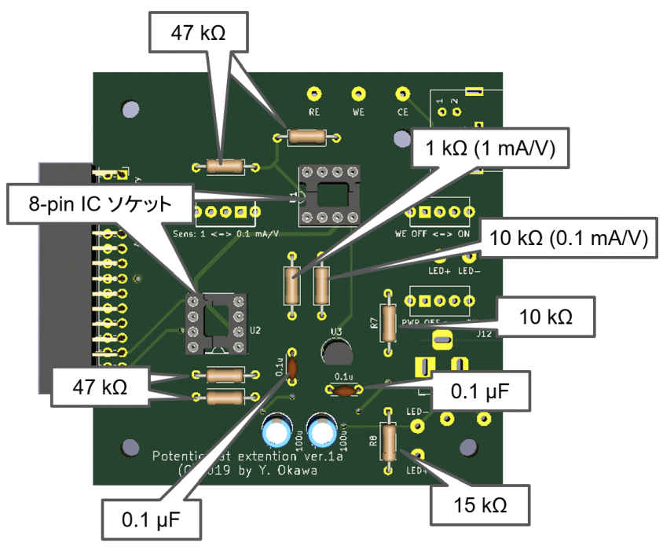
|
|
Fig. 8.5 部品の取り付け図 (その1)．背の低い部品の取り付け．
|
次に，Fig. 8.6 (右図) のように背の高い部品を取り付ける．トグルスイッチ，DCジャック，電解コンデンサ，三端子レギュレータ (78L12) を取り付ける．
78L12 と電解コンデンサには極性があるので，取り付ける向きに注意する．
Analog Discovery を接続する30-pinコネクタもここで取り付ける．
測定対象に接続するケーブルをソケットで取り付けるときは，ソケットを右上の角に取り付ける．
|
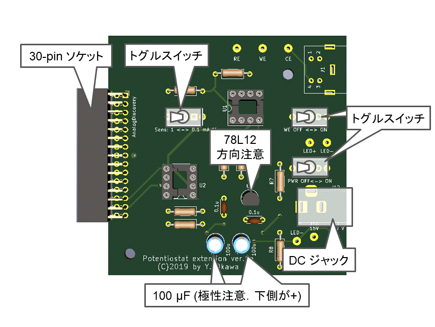
|
|
Fig. 8.6 部品の取り付け図 (その2)．背の高い部品の取り付け．
|
次に，Fig. 8.7 (右図) のように LED を取り付ける．極性に注意．足の長い方が + (アノード，A)，短い方が - (カソード，K) につながる．高さはトグルスイッチのレバー下に大体合わせておくとよいだろう．
ソケットを使わない場合は，測定対象に接続するケーブルを基板にはんだ付けする．長さは 1 m 程度を上限に，先端にワニ口クリップをはんだ付けする．色分けは，作用極を黒，参照極を緑，対極 (補助電極) を赤とする (電気化学系で一般的に用いられている色分け)．ケーブルから色分けされている方がよいが，せめてワニ口クリップは色分けして，確実に区別が付くように．
|
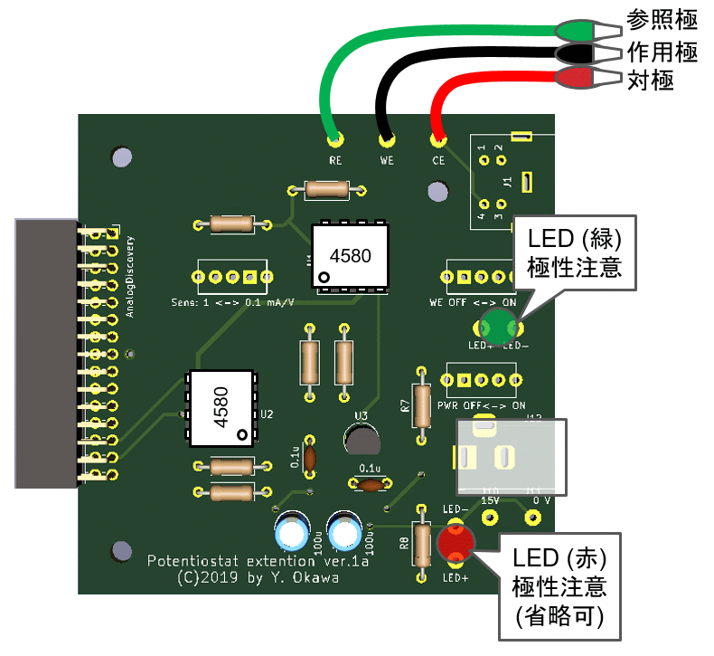
|
|
Fig. 8.7 部品の取り付け図 (その3)．残りの部品の取り付け (ケーブルソケットを使わず，電気化学系への接続ケーブルを基板に直付けする場合)．
|
最後に，IC をソケットに嵌める．向きに注意．OPアンプICの場合，部品名の印刷してある側から見たときに，Fig. 8.8 (右図) のようにピン番号が付いている．
最近のICの多くは Fig. 8.8 下のように1番ピン近くに円形の凹みがあり，そこから (上から見て) 反時計回りに 1→2→ … と番号が付いている．Fig. 8.8 中央のような形のこともあるし，この形に加えて，1番ピン側のマークがあるものもある．
基板面には Fig. 8.8 中央の形が印刷してあるので，向きを合わせて IC を取り付ける (Fig. 8.7)．
|
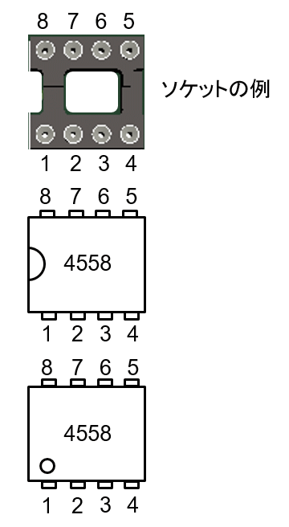
|
|
Fig. 8.8 ICの向き．
|
|
Fig. 8.9 (右図) に実装例を示す．上が測定系への接続にソケットを使った場合，下がケーブルを直接はんだ付けした場合の例である．
|
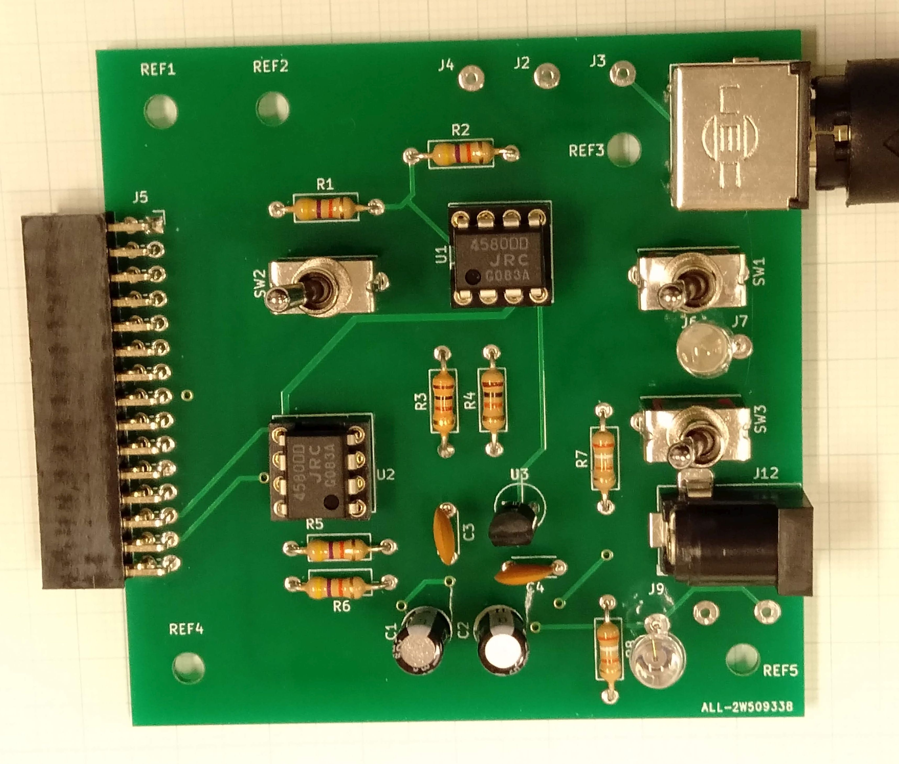
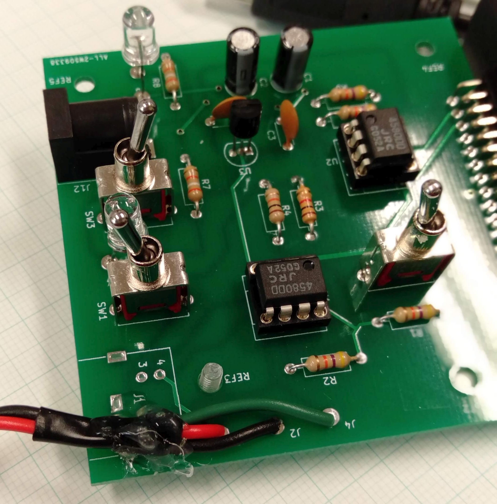
|
|
Fig. 8.9 実装例．
|
使用法
以下，Fig. 8.10 (右図) を参照．
- Analog Discovery を接続する．向きは Fig. 8.1 (Analog Discovery 2 の場合は Fig. 0.2) を参照．
- WE スイッチ (WE Sw)，Power スイッチ (Power Sw) を OFF 側に倒す．
- 感度スイッチは，感度の低くなる方に合わせる．
- 電源として，15 V (～ 24 V) のACアダプタをつなぐ．アダプタの出力が，センター側がプラスになっているものを用いる．
- ACアダプタ (100 V コンセント側は接続しておく) を接続すると，LED1 が点灯する．
- Power Sw を ON 側に倒すと，LED2 が点灯する．この状態で回路全体に通電しており，待機状態になっている．
- 電気化学系に接続する．
- WaveForms で測定に必要な設定を行う．
- 必要に応じて感度スイッチを切り替える．
- WE Sw を ON 側に倒すと，電位印加が始まる．測定中以外は，このスイッチは OFF にしておくこと．
|
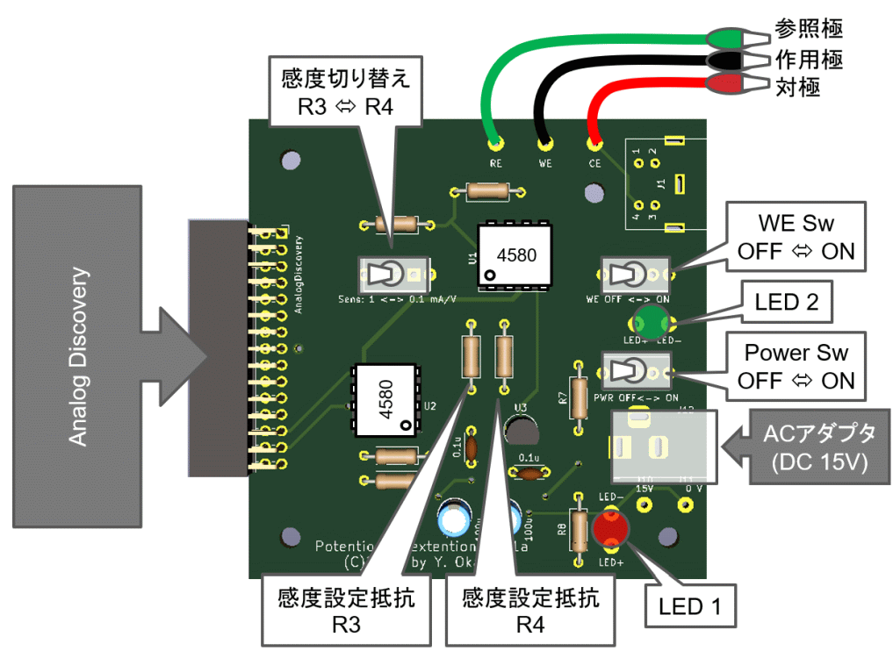
|
|
Fig. 8.10 操作法
|
重要： WE Sw は測定の直前に ON にし，終了後，まっさきに OFF にすること．
Power Sw は入れっぱなしでよい．
ケースへの組み込み
本ポテンショスタット拡張基板はすべての部品が基板上に実装されているため，このままでも使用できるが，電気化学系は水溶液を扱うことが多いため，電気回路むき出しの基板のまま使うのは好ましくない．
電気的なノイズの点でも本来は金属ケースに納めた方がよいのだが，拡張基板上にすべての部品を実装して配線を短距離にしているため (比較的) ノイズの乗りにくい構造になっており，ノイズのほとんどはむしろ電気化学系自体が拾う状況になる．そのためポテンショスタット基板自体をシールドする効果は高くない．そこで，簡単に加工のできるプラスチック製の容器を100円ショップで入手して組み込んでみた．
ケースには，スイッチレバー用の穴と LED が確認できる穴，および接続ケーブルが通る穴を開ける．基板には4箇所，ネジ止め用の穴が用意してあるので，15 mm 程度の基板用スペーサ (一例) を介してケースに固定する．
なお，スイッチ等をパネルに固定して，基板との間を被覆銅線で接続するような実装にした場合は，金属ケースを用いて全体をシールドする必要がある．ケースは，基板の GND (基板裏側の 2つの100μFの電解コンデンサを直結しているポイントから取るとよい) に接続する．
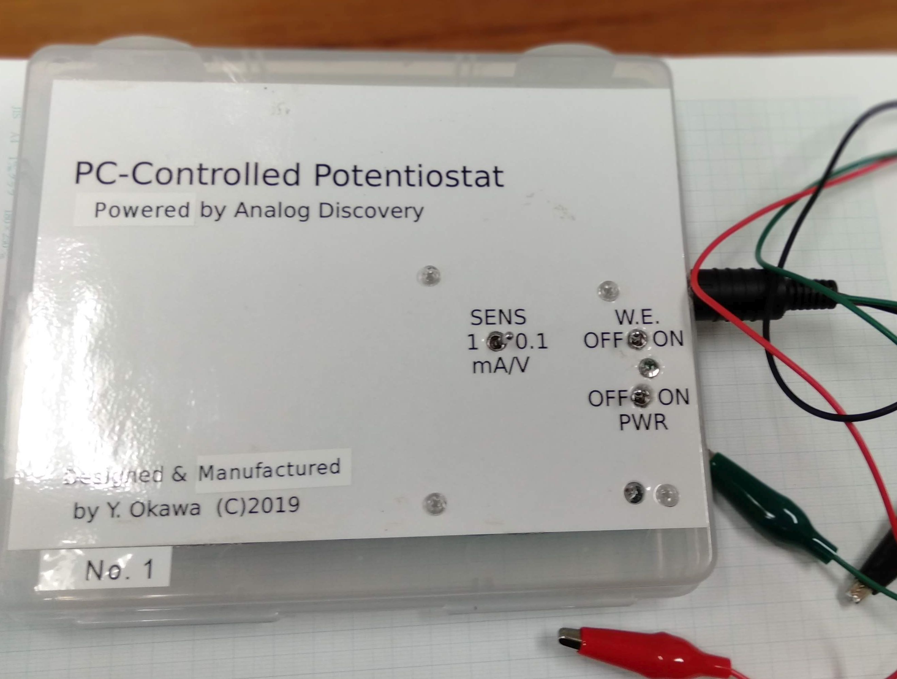
Fig. 8.11 100円ショップのケースに組み込んだ例．
ノイズ低減のための部品追加
|
WaveForms は標準でかなり強力なノイズ処理を施した結果を記録する (処理を外した真の生データを記録することもできる)．とはいえ，ポテンショスタットからのノイズは少ない方がよい．本拡張基板の回路はノイズフィルタをまったく入れていないが，フィルタを入れたいこともあるだろう．
IV変換回路の電流検出抵抗にコンデンサを並列に入れることで，1次のローパスフィルタにできる．感度 1 mA/V の場合，1 kΩの抵抗だが，これに並列に，たとえば 0.047 μF のコンデンサを入れると，カットオフ周波数 fc = 3 kHz になり，高周波領域のノイズはカットできる．感度設定抵抗ごとに適当なコンデンサを取り付けると，感度によらず同じカットオフ周波数を設定することもできるし，すべてを同じにすることもできる．一般的には高感度測定になるほどよりノイズを低減する必要があることが多いので，一つのコンデンサを常時追加するのもよい方法である．
Fig. 8.12 (右図) は，0.047 μFのセラミックコンデンサをひとつだけ使い，基板の裏側に直接はんだ付けして，1 mA/V レンジでは 3 kHz，より高感度な 0.1 mA/V レンジでは 300 Hz のカットオフ周波数になるような部品の追加例である．
|
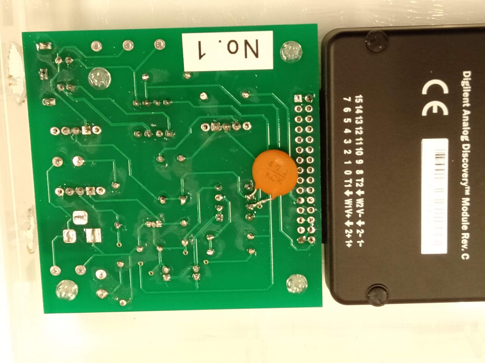
|
Fig. 8.12 ノイズ低減用コンデンサの追加例．
|
インピーダンス測定用の改造
この拡張基板の回路は最小限の回路構成になっており，応答速度に大きな影響を与える部分が少ない．結果的に，10 kHz程度までの交流信号にも十分追随できるものになっている．そのため，通常の周波数範囲での電気化学インピーダンス測定にも対応できる基本性能がある．しかし，電気化学インピーダンス測定の項でも述べたように，WaveForms のネットワークアナライザ機能をそのまま使うには Ch1 に電流，Ch2 に電位信号を入力しなくてはならないため，この拡張基板ではそのまま測定には使えない．
|
インピーダンス測定用には Ch1 と Ch2 を入れ替えた配線にすればいいだけなので，たとえば Fig. 8.13 のように，(力づくではあるが) つながるピンを交差させて配線するという方法がある．この場合，他の測定については WaveForms で Ch1 と Ch2 の立場を入れ替える設定を行って測定をする必要があり，また微分容量測定には使えなくなる．
スイッチやジャンパピンで切り替えられるようにすることも考えたが，インピーダンス測定の普及程度と本基板の立ち位置を考えると，そのために基板や操作時の設定が複雑になったりしては本末転倒と考え，標準仕様はインピーダンス測定には対応しないこととした．必要であれば2種類の基板を作って差し替えて使ってもよいくらいにコストは抑えたと考えている．
なお，ノイズフィルタを追加した場合はインピーダンス測定には使えなくなるので，インピーダンス専用基板を作るのはその意味でも妥当かもしれない．
また，この改造をしなくても，測定結果をアドミタンスとして記録し，Excel等で複素変換を行うことでインピーダンスを求めることはできる (測定中に Nyquist 図を観察できないという問題はある)．
|
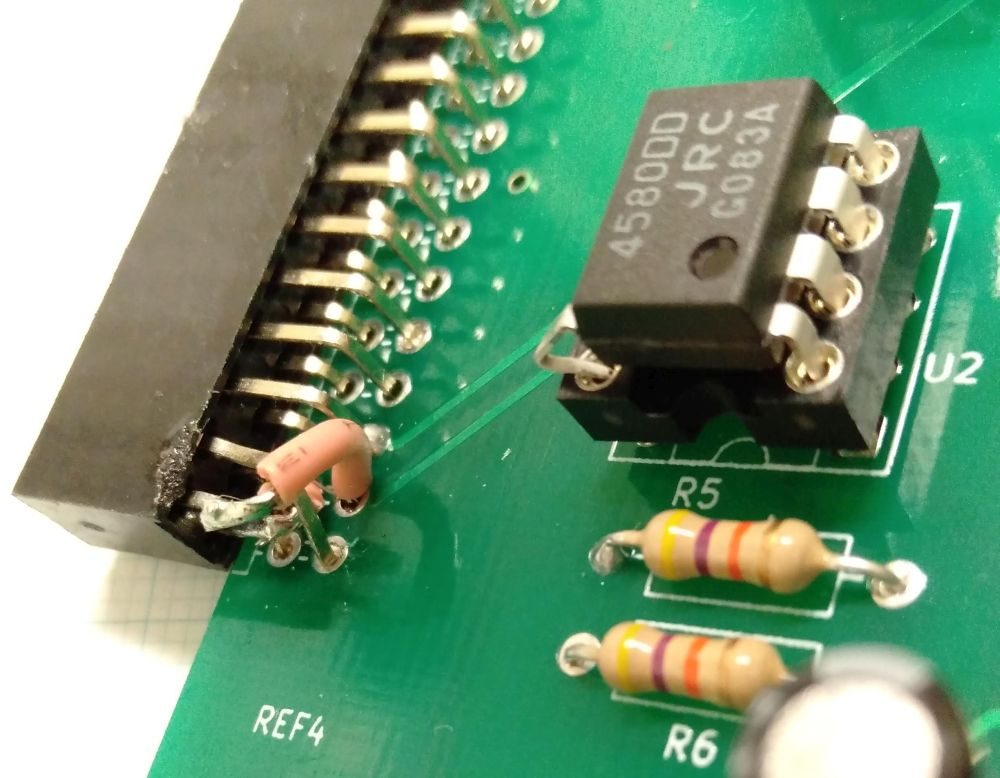
|
|
Fig. 8.13 インピーダンス測定用の端子の入れ替え例．
|
|
別の方法として Ch1 と Ch2 を入れ替えるアダプタを試作した (Fig. 8.14)．
詳しくは こちら．
|
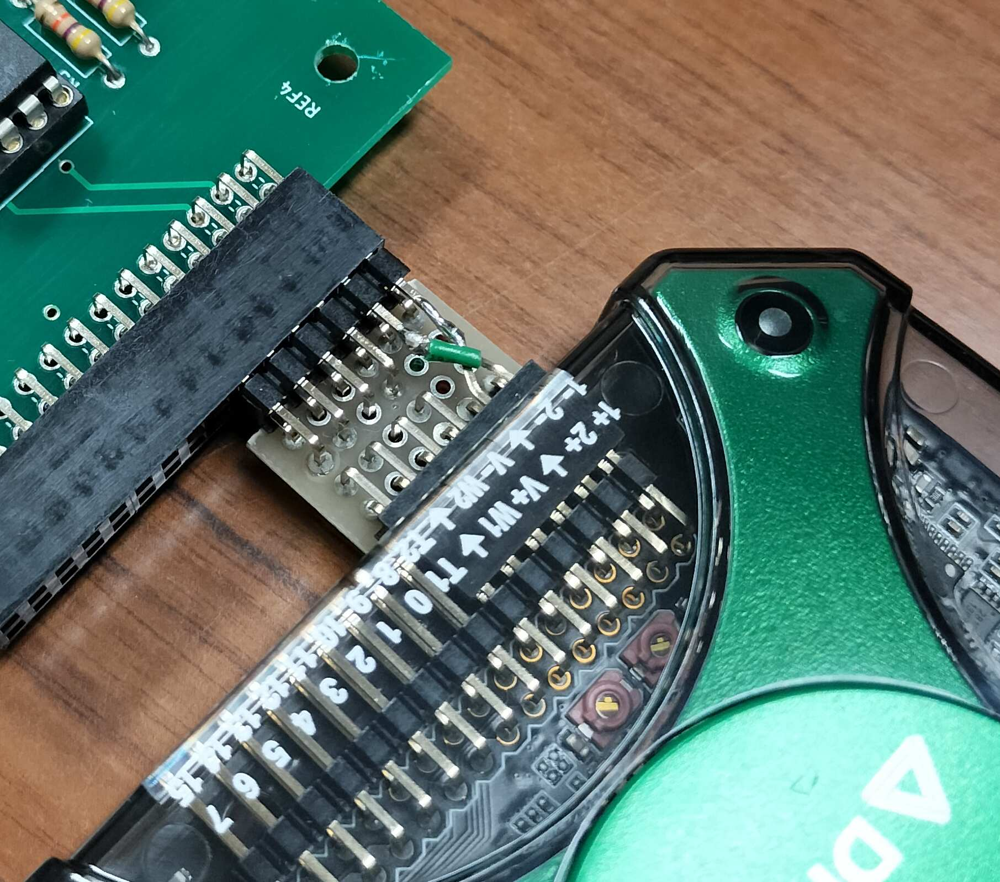
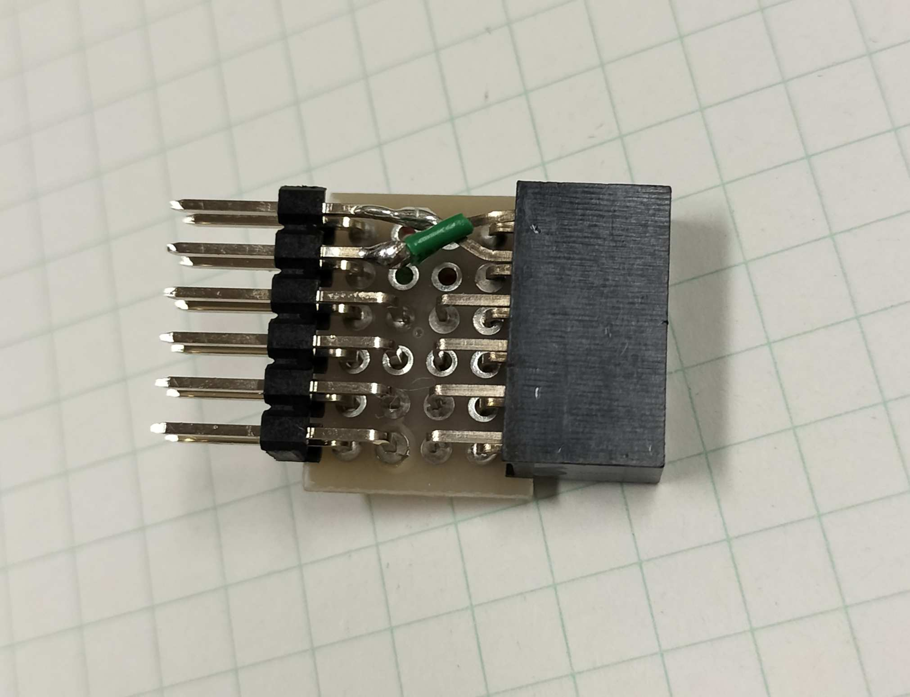
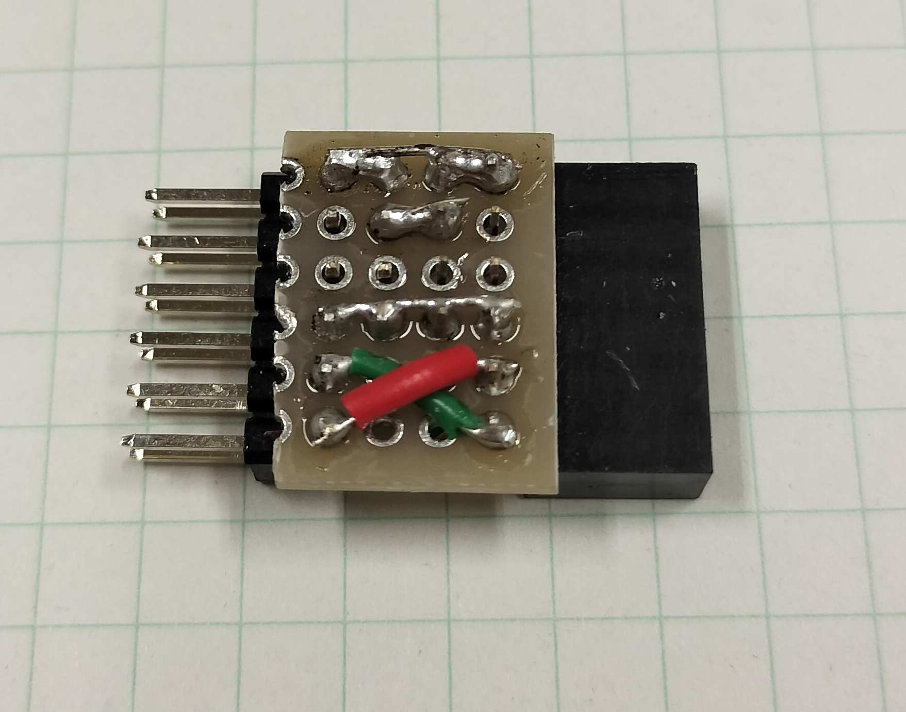
|
|
Fig. 8.14 インピーダンス測定用の端子の入れ替えアダプタの製作例．
|
電源の供給法
本基板は電力消費も少なく，基板上に安定化回路を持っており供給電源の影響を受けにくいため，供給するのは 15 ～ 24 V 程度の直流であれば何でもよく (0.1 A 程度の電流が供給できることは必要)，ACアダプタ以外に電池等での駆動が可能である．
一例として，Fig. 8.16 は 9 V の 006P 電池を2個直列にするアダプタの製作例である．
Fig. 8.17 は 5 V → 15 V の DC/DC コンバータ (一例) を USB ケーブルにつないだ例で，これを用いれば PC の USB ポート (Analog Discovery を接続するポートとは別) から電源をとり，ポテンショスタットを動作させることができる．また，スマートホン用などに普及しているモバイルバッテリを電源にすることもできる．
昇圧コンバータを使わなくても，USB Power Delivery (USB-PD) 対応で 15 V または 20 V の出力に対応した充電器やモバイルバッテリから，トリガケーブル等を用いて給電することもできる．
このようにすると可搬性が大きく向上し，講義室/教室での演示や屋外等でのその場測定に応用することもできる．
|
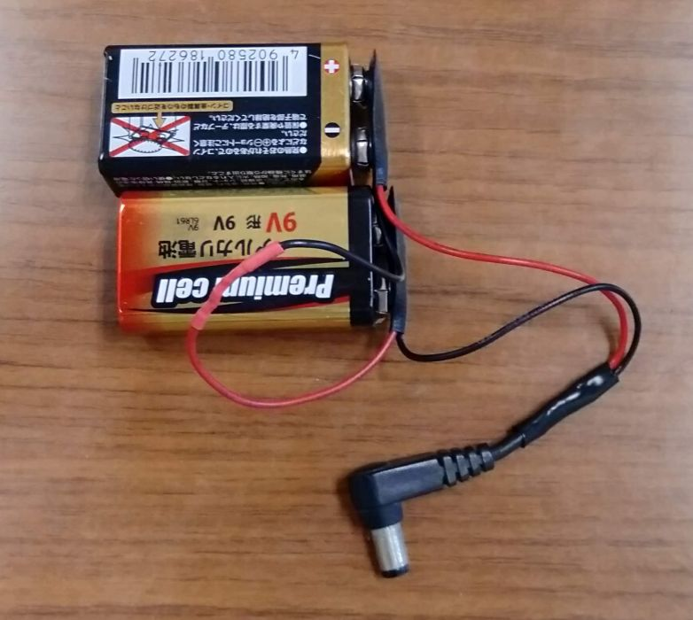
|
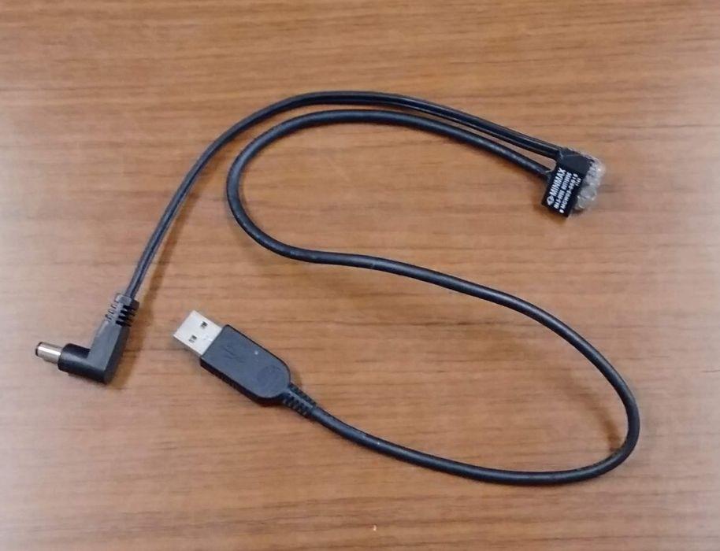
|
|
Fig. 8.16 006P 電池を2個直列にするアダプタの製作例．
|
Fig. 8.17 5 V → 15 V の DC/DC コンバータユニットを用いる電源アダプタの製作例．
|
性能向上のためのあれこれ
本機は学生実験のために設計したもので機能および性能的には多くの妥協をしているが，回路はきわめて原理的なもので，その性能はほとんど OP アンプの性能に依存している．試作機では，価格 (ひとつ数十円) と性能のバランスを考えて 4580 を用いたが，OP アンプを目的に合わせて適切に選んで挿し換えれば，少なくともピンポイントの性能に関してはもう少し向上の余地がある．最大で千円レベルのコストアップにはなるが，比較的安価で入手性のよいものを使った例をいくつか紹介する．ただし，これらは実際に全てを試したわけではないので，完全な動作を保証できないことはご理解いただきたい (一部は動作確認済み)．
- NJM4556 を用いると出力電流を 50 mA 程度まで増やせる (ただし，10 mA/V レンジでは40 mA 程度までしか流せない (測れない) ので，100 mA/V レンジ (感度設定抵抗 10 Ω) が必要))．
- μA レベル (あるいはそれ以下) の微小電流測定には NJM4580DD のようなバイポーラ入力タイプは不適当である (入力バイアス電流が大きい)．FET 入力タイプ (NJM072D や TL072D 等) にすればもう少し小さい電流でも測定可能になるはずである．例えば感度設定抵抗を 100 kΩにして 10μA/V にするなど．ただしノイズ対策は必要になるだろう．また最大出力電流が 数 mA 程度以下に制限される．
- いわゆるレール・トゥ・レール (フルスイング) OP アンプを使うと，出力電圧を (ほぼ) ±6 V まで拡大できる (4580 では ±4.5 V 程度が上限)．とくに有機溶媒系での測定ではこのくらいの実出力電圧が必要になることがあり，4580 や 072 等ではギリギリ，あるいは不足することもあるだろう．OP アンプの出力電圧の制限は同時に各レンジで測れる電流の最大値も規定している．たとえば 4580 の場合，1 mA/V レンジでは 約 4.5 mA で記録が飽和するが，レール・トゥ・レールタイプであれば 6 mA 近くまで飽和せずに測定できる．ただし，このタイプの IC は使える電源電圧の上限が低いものがあるので注意がいる (本基板の回路は内部 12 V で動作)．例として NJU77902 (要 DIP化キット．本基板での動作は確認済み) を挙げておく．なお，WaveForms の設定できる電位範囲は±5 V までであり，これが「測定系に対して『設定できる』電位範囲」になることにも注意．
- NJU77902 は CMOS タイプであり入力バイアス電流も小さいので微小電流にも対応できるはず．
- NJU77902 は数100 mA の出力も可能になるので 100 mA/V レンジ (感度設定抵抗を 10 Ω 1/2W にする) を実現できる (連続的に大電流を出力するときは，チップの放熱対策も必要)．この場合，電源も対応させる必要があり，三端子レギュレータは 78M12 (あるいは 7812) に変更する必要がある (ACアダプタも相応の電流の取れるものに)．ただし，基板の穴には足が通らないので取り付けには工夫が必要 (78L12 周りは両面配線のところがあるので，穴を広げる場合はレギュレータの中央の端子で両面がつながる状態を確保する必要がある)．また WE への配線を電位検出線と電流供給線に分けた方がよい．
6. 微分容量測定 
 目次
目次
{kind=link}
{kind=link}
{kind=link}
{kind=link}
{kind=link}
{kind=link}
{kind=link}
{kind=link}
{kind=link}
{kind=link}
{kind=link}
{kind=link}
{kind=link}
{kind=link}
{kind=link}